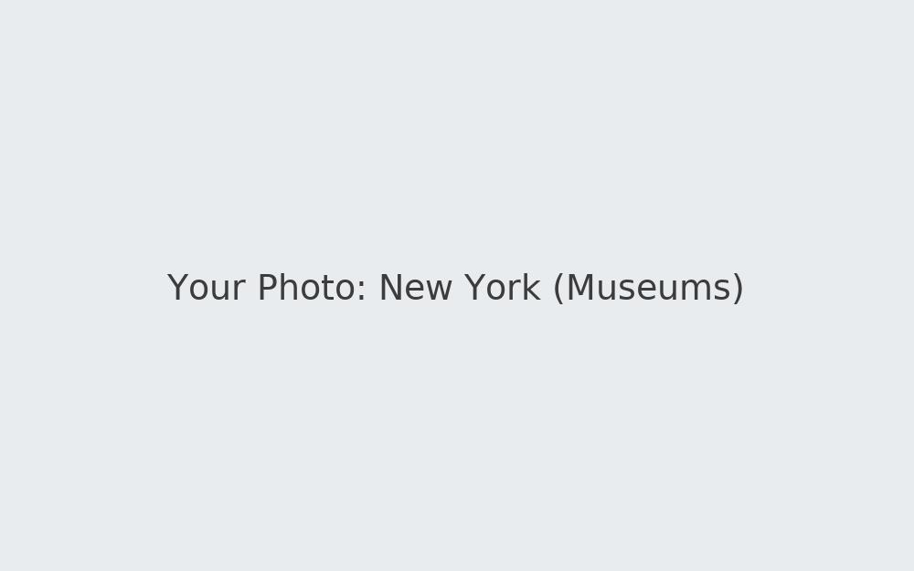
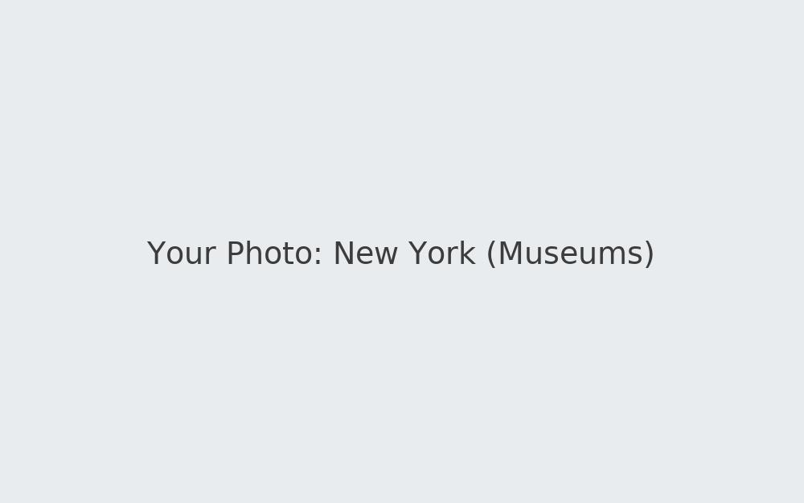

Destinations
Highlights from places I've visited. The list isn’t exhaustive, but these stood out for culture, food, or scenery. Use this as a springboard for your own planning.
- Florida — Beaches and boardwalks
- New York — Museums and neighborhoods
- Wisconsin — Lakes, trails, and cozy towns
 
